Обслуживание и ремонт коммерческого транспорта
Обслуживаем и ремонтируем коммерческий транспорт различных марок.
Записаться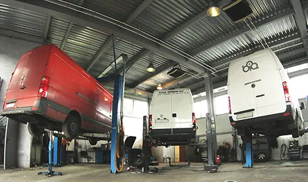
Полная диагностика и быстрый ремонт автомобилей компании с гарантией качества в ЮАО Москвы.
Автотехцентр VWS предлагает весь комплекс услуг по ремонту и техническому обслуживанию малого коммерческого автотранспорта и малотоннажных автомобилей в Москве. Ответственно выполняем поставленную работу.
Ремонтируем коммерческие автомобили
| Фольксваген ЛТ | Фольксваген Крафтер | Фольксваген Т5 | Фольксваген Кадди |
|---|---|---|---|
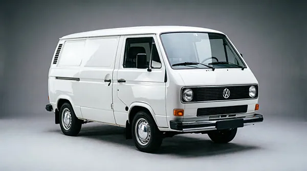 | 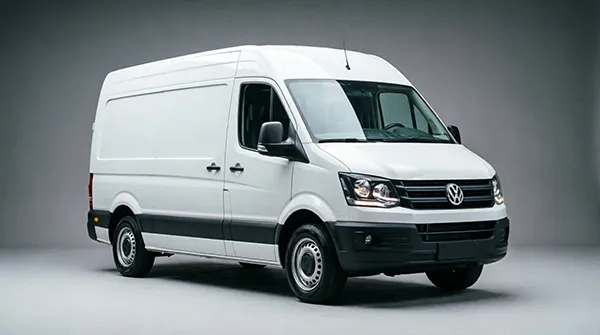 | 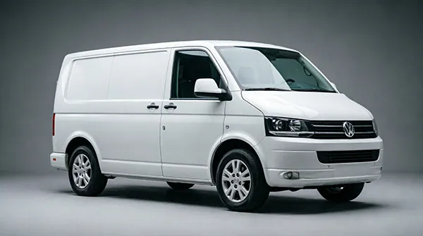 | 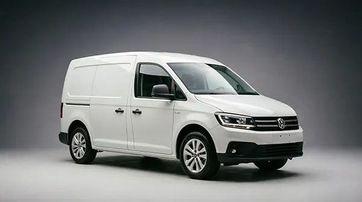 |
| Мерседес Спринтер | Форд Транзит | Ситроен Джампер | Ситроен Берлинго |
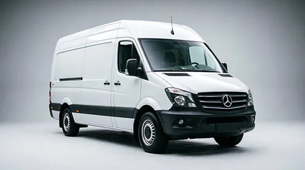 | 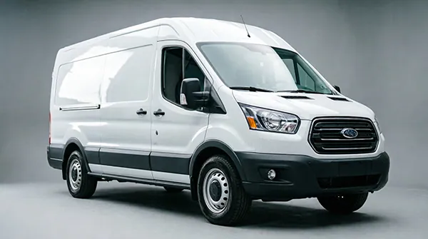 | 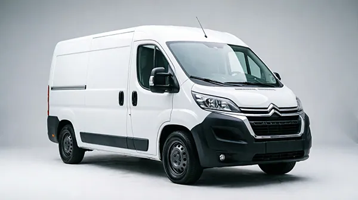 | 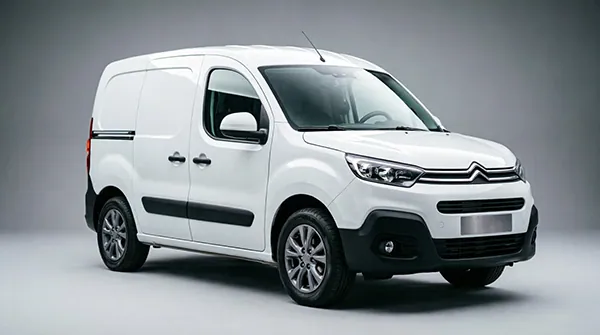 |
Отремонтируем и другой коммерческий транспорт, узнать подробнее можно оставив заявку на сайте или позвонив нам.
➤ Производственные мощности позволяют обслуживать автомобили с длинной до 7,5м и высотой до 3,5м.
Компании, которые обслуживаются у нас в автосервисе
| ОАО «РЖД» | ПАО «Роснефть» | ГК «Автодор» | «Москомспорт» | ПАО «Башнефть» |
|---|
Клиентами нашей компании становятся как частные лица, так и коммерческие организации, которых привлекает высокое качество профессионального обслуживания и низкие цены.
Услуги в данном направлении включают:
- полную компьютерную диагностику с применением новейшего электронного оборудования;
- кузовные работы, ремонт ходовой части, ремонт электроники и оптики, замена оптики, автостекла, ремонт рулевого управления, регулировка схода-развала, установка дисков, шиномонтаж, ремонт двигателей
- техобслуживание (разовое и на договорной основе);
- продажа и установка оригинальных запчастей, комплектующих и расходных материалов;
- тюнинг коммерческого автотранспорта.
Коммерческий транспорт требует особого подхода при ремонте и техобслуживании. Для качественного сервиса необходимо использование высокоточного оборудования, специальных приборов и приспособлений, например, мощных подъемников, позволяющих мастеру быстро и легко получить доступ к любому узлу автомобиля. Именно таким оборудованием и оснащены боксы техцентра VWS.
Предложения
Компания VWS готова на выгодных условиях принять на обслуживание коммерчиские автомобили из автопарка корпоративных клиентов. Переложив заботы о ремонте и ТО транспортных средств на наши плечи, Вы сможете:
- сократить расходы на содержание автомобилей;
- отказаться от организации собственной СТО;
- сэкономить на закупке ремонтного и диагностического оборудования;
- избежать потерь прибыли из-за простоя транспорта;
- четко контролировать техническое состояние автопарка, получая ежемесячные отчеты;
- оптимизировать затраты на ТО и ремонт.
Специально для корпоративных клиентов автосервис открыл выгодную дисконтную систему. Для частных клиентов также разработана система скидок. Мы предлагаем наиболее эффективные программы обслуживания, которые существенно продлевают срок эксплуатации автомобиля, минимизируют простои и сводят на нет вероятность поломки транспортного средства в дороге.
Сервис VWS
Обслуживаем коммерческий транспорт Диагностика неисправностей
Ремонт ДВС и трансмиссии
Замена тормозов и подвески
Починка электропроводки
Низкие цены в Москве
Узнать подробнее о услугах
Ремонтируем рабочие автомобили
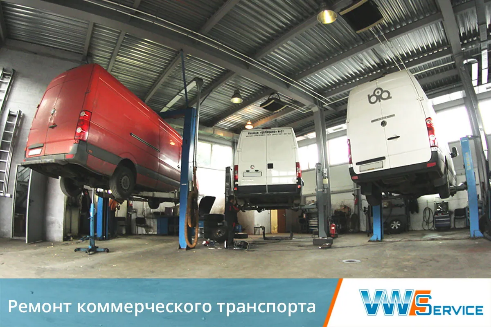
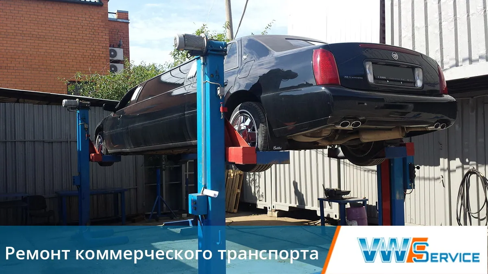
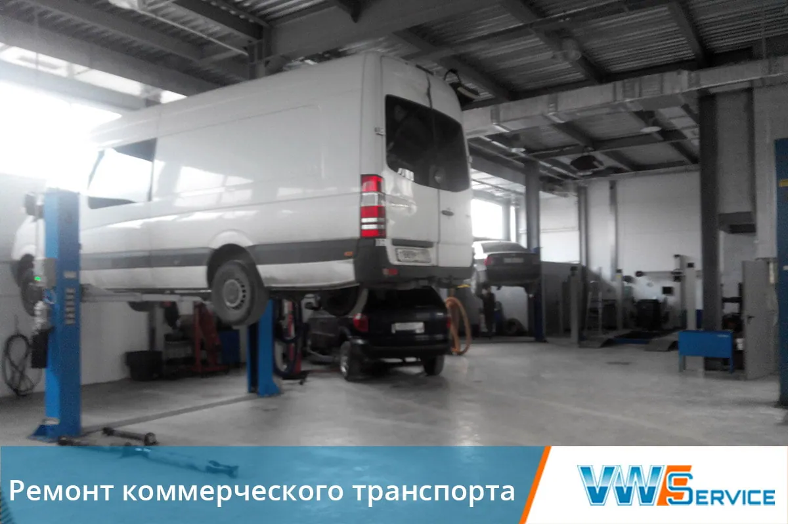
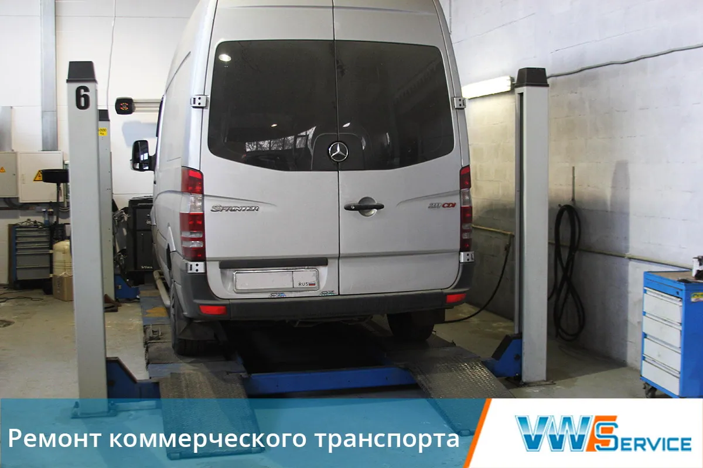
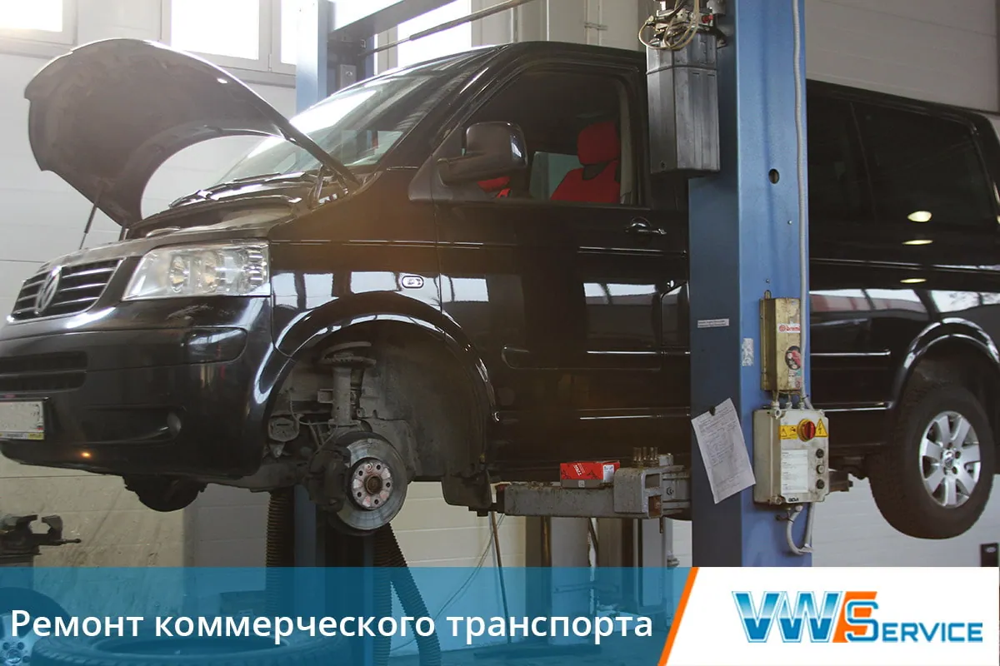
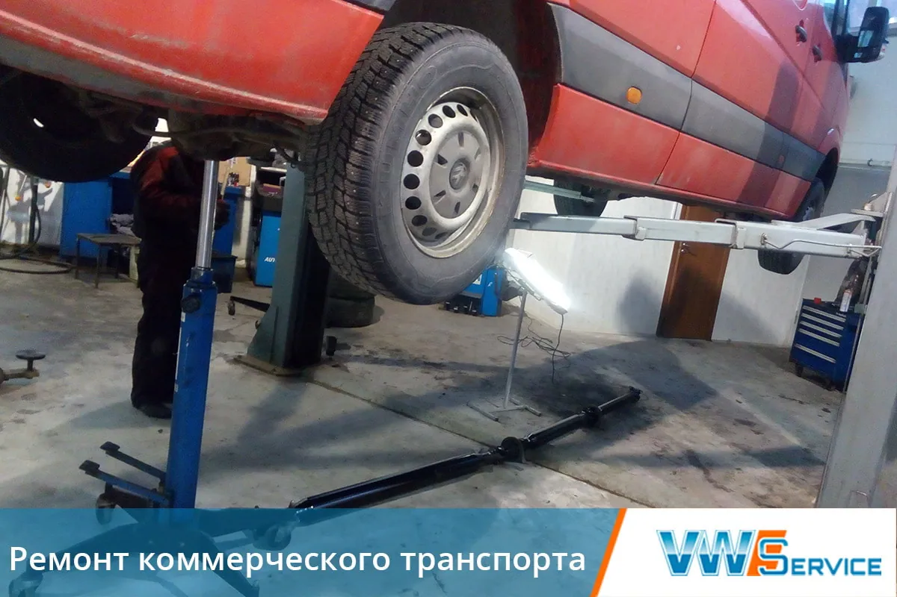
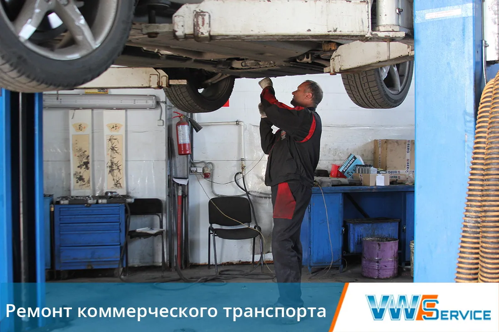
Выберите модель
Другие услуги
Контакты
- г. Москва, 1-й Дорожный проезд, д. 5АЮАО Москвы. Ближайшее метро — «Южная»
- Ежедневно с 8:30 до 20:30Без выходных. Приём автомобилей — круглосуточно
- +7 (495) 260-06-02Эвакуатор: +7 (495) 796-29-99